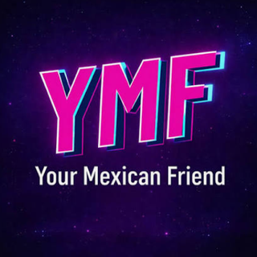

💬
Conversación con IA
Practica situaciones reales (pedir tacos, tomar un taxi, platicar con amigos) sin miedo a equivocarte.

YMF CoachReal Mexican Spanish, powered by AI
YMF Coach es tu compañero de práctica con inteligencia artificial: conversas, corriges tu acento y aprendes los modismos de la calle, no los del libro.
Qué es YMF Coach
Las apps genéricas enseñan un español neutral que casi nadie habla en la calle. Your Mexican Friend nació para cerrar esa brecha, y YMF Coach es su producto tecnológico: una aplicación de práctica conversacional de español mexicano con inteligencia artificial, conectada con clases de tutoría 1 a 1.
Practica situaciones reales (pedir tacos, tomar un taxi, platicar con amigos) sin miedo a equivocarte.
Hablas, el Coach te escucha y te da pistas concretas para sonar más natural.
Aprende expresiones coloquiales y el contexto cultural que las acompaña.
Aprendes español mexicano auténtico con contenido real, una comunidad viva y tecnología accesible, y cuando necesitas a una persona, el puente a una clase 1 a 1 ya existe.
Cómo funciona
Sin formularios largos ni configuración técnica.
De principiante (A1) a avanzado (C1).
Viajar, hacer amigos, trabajar o entender la cultura.
Cuántos días a la semana quieres practicar. Nosotros te acompañamos.
Interactúa
…
Características y beneficios
Característica Disponible a cualquier hora desde el celular o la computadora.
Beneficio Aprendes a tu ritmo, sin depender de horarios de clase.
Característica Correcciones de pronunciación y de uso en cada respuesta.
Beneficio Corriges errores al momento y ganas confianza para hablar.
Característica Modismos y frases inspiradas en conversaciones reales con hablantes nativos.
Beneficio Entiendes y usas el español de la calle, la música y las redes.
Característica Retos diarios, rachas de práctica e insignias por dominar categorías.
Beneficio Mantienes la constancia, que es lo que más pesa al aprender un idioma.
Característica Un espacio para usuarios activos con intereses compartidos.
Beneficio Practicas acompañado y encuentras motivación.
Característica Conexión directa con las tutorías de Your Mexican Friend.
Beneficio Cuando quieres hablar con una persona, ya tienes dónde.
Mercado objetivo
Jóvenes adultos de 18 a 34 años, principalmente en Estados Unidos, con un interés genuino por México.
Les gusta la música regional, la gastronomía y el contenido en redes sociales, y quieren comunicarse con confianza con amigos, familia, colegas o durante un viaje, en el español que realmente se usa.
Catálogo de productos y servicios
Agrega al carrito para ver cómo funciona la tienda. Precios ilustrativos: YMF Coach está en desarrollo y este sitio es un proyecto académico.
Nosotros
Ayudar a personas con un interés genuino por la cultura mexicana a comunicarse en español real, el que se habla en la calle y no el de los libros, combinando contenido auténtico, comunidad y tecnología accesible.
Ser, hacia 2030, la plataforma de referencia para aprender español mexicano coloquial con inteligencia artificial, reconocida tanto por su autenticidad cultural como por la calidad de su tecnología.
Your Mexican Friend (YMF) es una marca registrada ante el Instituto Mexicano de la Propiedad Industrial, con un podcast bilingüe, clases de español 1 a 1 para extranjeros y una comunidad en redes sociales que ya practica con nosotros. YMF Coach es el siguiente paso: llevar esa experiencia a una aplicación con inteligencia artificial.
Preguntas frecuentes
No. Puedes empezar desde nivel principiante (A1) y avanzar hasta nivel avanzado (C1).
Es exclusivamente español mexicano: vocabulario, expresiones y acento de México. No usamos “vosotros”.
Sí. Si quieres reforzar con un hablante nativo, Your Mexican Friend ofrece clases 1 a 1.
Está en desarrollo. Este sitio presenta el proyecto y su catálogo con fines académicos; los precios son ilustrativos.
Contacto
¿Dudas, ideas o ganas de practicar? Escríbenos.